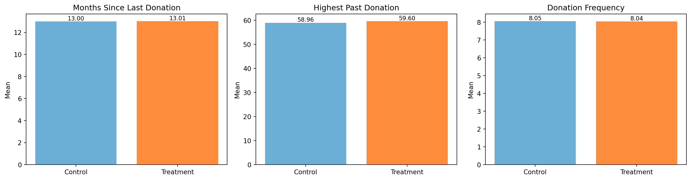
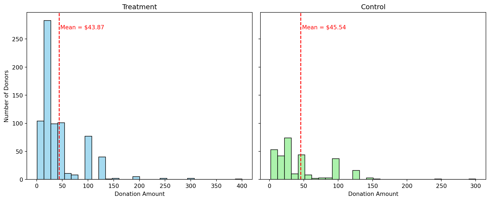
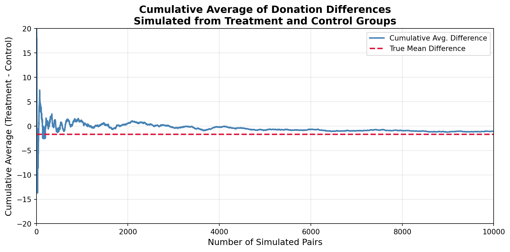
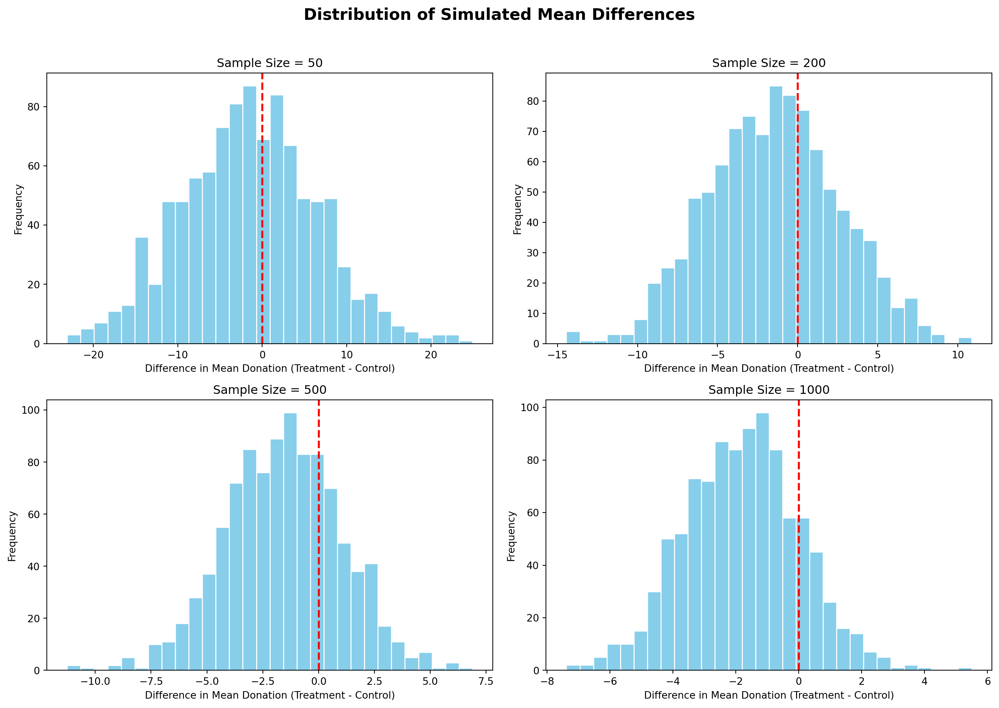

Dean Karlan at Yale and John List at the University of Chicago conducted a field experiment to test the effectiveness of different fundraising letters. They sent out 50,000 fundraising letters to potential donors, randomly assigning each letter to one of three treatments: a standard letter, a matching grant letter, or a challenge grant letter. They published the results of this experiment in the American Economic Review in 2007. The article and supporting data are available from the AEA website and from Innovations for Poverty Action as part of Harvard’s Dataverse.
In this field experiment, each donor in the sample was randomly assigned to receive one of several versions of a fundraising letter. The control group received the nonprofit’s standard appeal—a typical letter asking for support, with no mention of any special incentives.
The treatment group, on the other hand, received letters that included a matching grant offer. These letters stated that a concerned member of the organization would match the recipient’s donation at a fixed rate. Every dollar donated would be matched immediately, increasing the total contribution the organization would receive.
The treatment letters varied across three key dimensions:
Matching ratio
Donors were randomly assigned to receive a match offer of 1:1, 2:1, or 3:1, meaning the organization would receive $2, $3, or $4 for every $1 donated.
Maximum match amount
The total available match funding was stated as either $25,000, $50,000, $100,000, or left unstated.
Suggested donation amount
Each letter included a reply card with three suggested gift levels based on the donor’s previous highest contribution: the same amount, 1.25×, or 1.5×. One of these was used as an example in the match statement.
Aside from these randomized variations, all letters were identical in format, tone, and content. This design allowed the researchers to isolate the effect of the matching grant mechanism and its specific features on donor behavior.
This project seeks to replicate their results.
Data
Description
The dataset consists of 50,083 observations and 51 variables, representing prior donors who were part of a large-scale direct mail fundraising experiment. Each row corresponds to an individual who received a solicitation letter, and the variables capture both treatment assignments and individual characteristics.
The bar plots show the distribution of key categorical variables in the dataset. The sample is unbalanced across treatment groups by design, with approximately two-thirds assigned to treatment. Only 2.1% of individuals donated, indicating a low response rate. Most of the sample resides in blue states (59.5%), and the majority of donors are male (70.6%) and not donating as a couple (88.7%).
The histograms of numeric variables show that both donation-related and historical giving behaviors are highly skewed to the right. Most donation amounts are under $100, and both highest past donation and frequency of past donations exhibit long right tails, suggesting that a small subset of donors account for a disproportionately large share of past giving. The recency variable (mrm2) also shows many donors who haven’t contributed recently, with the most frequent values clustered between 0 and 12 months.
Suggested donation was highest previous contribution
askd2
Suggested donation was 1.25 x highest previous contribution
askd3
Suggested donation was 1.50 x highest previous contribution
ask1
Highest previous contribution (for suggestion)
ask2
1.25 x highest previous contribution (for suggestion)
ask3
1.50 x highest previous contribution (for suggestion)
amount
Dollars given
gave
Gave anything
amountchange
Change in amount given
hpa
Highest previous contribution
ltmedmra
Small prior donor: last gift was less than median $35
freq
Number of prior donations
years
Number of years since initial donation
year5
At least 5 years since initial donation
mrm2
Number of months since last donation
dormant
Already donated in 2005
female
Female
couple
Couple
state50one
State tag: 1 for one observation of each of 50 states; 0 otherwise
nonlit
Nonlitigation
cases
Court cases from state in 2004-5 in which organization was involved
statecnt
Percent of sample from state
stateresponse
Proportion of sample from the state who gave
stateresponset
Proportion of treated sample from the state who gave
stateresponsec
Proportion of control sample from the state who gave
stateresponsetminc
stateresponset - stateresponsec
perbush
State vote share for Bush
close25
State vote share for Bush between 47.5% and 52.5%
red0
Red state
blue0
Blue state
redcty
Red county
bluecty
Blue county
pwhite
Proportion white within zip code
pblack
Proportion black within zip code
page18_39
Proportion age 18-39 within zip code
ave_hh_sz
Average household size within zip code
median_hhincome
Median household income within zip code
powner
Proportion house owner within zip code
psch_atlstba
Proportion who finished college within zip code
pop_propurban
Proportion of population urban within zip code
Balance Test
As an ad hoc test of the randomization mechanism, I provide a series of tests that compare aspects of the treatment and control groups to assess whether they are statistically significantly different from one another.
Code
import pandas as pddf = pd.read_stata("../data/karlan_list_2007.dta") import matplotlib.pyplot as pltimport seaborn as snsimport numpy as npimport statsmodels.api as smfrom scipy.stats import t as t_dist# Variablestest_vars = ['mrm2', 'hpa', 'freq']var_labels = {'mrm2': 'Months Since Last Donation','hpa': 'Highest Past Donation','freq': 'Donation Frequency'}fig, axes = plt.subplots(1, 3, figsize=(15, 4))axes = axes.flatten()for i, var inenumerate(test_vars): means = [ df[df['treatment'] ==0][var].mean(), df[df['treatment'] ==1][var].mean() ] labels = ['Control', 'Treatment'] colors = ['#6baed6', '#fd8d3c'] bars = axes[i].bar(labels, means, color=colors) axes[i].set_title(var_labels[var]) axes[i].set_ylabel("Mean")# Add value labelsfor bar, mean inzip(bars, means): axes[i].text(bar.get_x() + bar.get_width()/2, bar.get_height(),f"{mean:.2f}", ha='center', va='bottom', fontsize=9)plt.tight_layout()plt.show()# t-test and regression comparisonresults = []for var in test_vars: x1 = df[df["treatment"] ==1][var].dropna() x0 = df[df["treatment"] ==0][var].dropna() mean1 = x1.mean() mean0 = x0.mean() diff = mean1 - mean0 var1 = x1.var(ddof=1) var0 = x0.var(ddof=1) n1 =len(x1) n0 =len(x0) se = np.sqrt(var1 / n1 + var0 / n0) t_stat = diff / se df_denom = (var1/n1 + var0/n0)**2/ ((var1**2/ (n1**2* (n1 -1))) + (var0**2/ (n0**2* (n0 -1)))) ttest_p =2* (1- t_dist.cdf(abs(t_stat), df=df_denom)) X = sm.add_constant(df[['treatment']]) model = sm.OLS(df[var], X, missing='drop').fit() reg_t = model.tvalues['treatment'] reg_p = model.pvalues['treatment'] results.append({'Variable': var,'Mean_Treatment': round(mean1, 3),'Mean_Control': round(mean0, 3),'Difference': round(diff, 3),'T-test t': round(t_stat, 3),'T-test p': round(ttest_p, 4),'Reg t': round(reg_t, 3),'Reg p-value': round(reg_p, 4) })pd.DataFrame(results)

Variable
Mean_Treatment
Mean_Control
Difference
T-test t
T-test p
Reg t
Reg p-value
0
mrm2
13.012
12.998000
0.014
0.120
0.9049
0.119
0.9049
1
hpa
59.597
58.959999
0.637
0.970
0.3318
0.944
0.3451
2
freq
8.035
8.047000
-0.012
-0.111
0.9117
-0.111
0.9117
The bar plots visually confirm that the treatment and control groups are nearly identical in their pre-treatment characteristics. There is no meaningful difference in the average months since last donation, highest past donation, or donation frequency.
Statistical tests further support this conclusion. Both t-tests (using the class formula) and simple regressions yield non-significant results at the 95% confidence level, with very small t-statistics and large p-values across all variables.
These findings align with Table 1 in Karlan and List (2007), providing strong evidence that the random assignment was successfully implemented and that treatment and control groups are balanced in observable covariates. This supports the internal validity of any subsequent causal analysis.
Experimental Results
Charitable Contribution Made
First, I analyze whether matched donations lead to an increased response rate of making a donation.
The treatment group has a higher donation rate (2.20%) than the control group (1.79%), suggesting a positive effect of the matching offer on donor response.
T-test result:
• Mean difference in donation rate (Treatment - Control): 0.0042
• t-statistic: 3.209
• p-value: 0.0013
Linear regression result:
• Coefficient on treatment: 0.0042
• t-statistic: 3.101
• p-value: 0.0019
Both the t-test and the linear regression show that the treatment group had a higher donation rate than the control group, and this difference is statistically significant at the 1% level. Specifically, receiving a matching grant offer increases the probability of donating by about 0.42 percentage points—rising from roughly 1.79% in the control group to 2.21% in the treatment group. While this absolute change may appear small, it represents a relative increase of over 20%, which is substantial given the typically low baseline response rate in charitable giving.
To further support this finding, I estimate a probit model where the outcome is whether a donation was made and the explanatory variable is treatment assignment. The coefficient on treatment is 0.087, which is also statistically significant at the 1% level. Although the coefficient cannot be interpreted directly as a probability, it indicates an increase in the latent propensity to donate among individuals who received the matching message.
Taken together, the results provide consistent evidence that even modest psychological framing—such as mentioning that a donation will be matched—can meaningfully increase donor response.
Code
import pandas as pddf = pd.read_stata("../data/karlan_list_2007.dta")from statsmodels.discrete.discrete_model import Probitimport statsmodels.api as smX = sm.add_constant(df['treatment'])probit_model = Probit(df['gave'], X).fit()print(probit_model.summary())
Next, I assess the effectiveness of different sizes of matched donations on the response rate.
I conduct three pairwise t-tests comparing donation rates between match ratios (2:1 vs. 1:1, 3:1 vs. 1:1, and 3:1 vs. 2:1). The differences in mean donation rates across these groups are all very small and none are statistically significant at the 5% level. All p-values are well above 0.30. This suggests that the presence of a match itself may be sufficient to motivate behavior, while increasing the match ratio beyond 1:1 offers little incremental benefit.
To determine whether higher match ratios influence the likelihood of donating, I regress the binary outcome gave on the categorical variable ratio, using only the treatment group. The 1:1 match ratio serves as the reference category, and the model estimates how donation rates differ under 2:1 and 3:1 matching offers.
Code
import pandas as pddf = pd.read_stata("../data/karlan_list_2007.dta")treat_df = df[df["ratio"].isin([1, 2, 3])].copy()treat_df["ratio"] = treat_df["ratio"].astype("category")import statsmodels.formula.api as smfmodel = smf.ols("gave ~ C(ratio, Treatment(reference=1))", data=treat_df).fit()params = model.paramspvals = model.pvaluesprint("Linear regression comparing match ratios (baseline: 1:1):")print(f" • Intercept (1:1 match): {params['Intercept']:.4f}")print(f" • 2:1 vs 1:1 match: Coef = {params['C(ratio, Treatment(reference=1))[T.2]']:.4f}, p = {pvals['C(ratio, Treatment(reference=1))[T.2]']:.4f}")print(f" • 3:1 vs 1:1 match: Coef = {params['C(ratio, Treatment(reference=1))[T.3]']:.4f}, p = {pvals['C(ratio, Treatment(reference=1))[T.3]']:.4f}")
Linear regression comparing match ratios (baseline: 1:1):
• Intercept (1:1 match): 0.0207
• 2:1 vs 1:1 match: Coef = 0.0019, p = 0.3383
• 3:1 vs 1:1 match: Coef = 0.0020, p = 0.3133
The estimated coefficients for ratio2 and ratio3 are positive, suggesting slightly higher donation rates compared to the 1:1 baseline. However, both coefficients are not statistically significant (p-values > 0.3), indicating that the observed differences could be due to random variation rather than a true treatment effect.
To assess whether increasing the match ratio leads to higher response, I compared donation rates directly from the data and from the regression coefficients.
Donation rate differences (direct from data):
• 2:1 vs 1:1: 0.0019
• 3:1 vs 2:1: 0.0001
Estimated difference from regression coefficients:
• 2:1 vs 1:1: 0.0019
• 3:1 vs 2:1: 0.0001
Moving from a 1:1 to a 2:1 match produced a small increase of 0.19%, while the difference between 3:1 and 2:1 was nearly zero (0.01%). These results were mirrored exactly in the regression estimates.
In practical terms, offering a match matters, but increasing the match size does not appear to further improve donation response. For fundraisers, this suggests that a basic 1:1 match may be just as effective as higher ratios, but at a lower cost.
Size of Charitable Contribution
In this subsection, I analyze the effect of the size of matched donation on the size of the charitable contribution.
I regress donation amount on the match ratio using the treatment group, with 1:1 as the reference group. The baseline average donation under 1:1 is $0.94. Compared to this:
The 2:1 group gives $0.09 more (p = 0.46)
The 3:1 group gives almost the same (p = 0.99)
This suggests that higher match ratios do not meaningfully affect how much people donate, even if they influence whether they donate at all.
Notes: [1] Standard Errors assume that the covariance matrix of the errors is correctly specified.
I regress donation amount on the match ratio using only individuals who made a donation. The average donation in the 1:1 group is $45.14. Compared to this:
The 2:1 group gives $0.19 more (p = 0.96)
The 3:1 group gives $3.89 less (p = 0.31)
These differences are small and statistically insignificant. This suggests that once someone decides to donate, the size of the match does not influence how much they give.
Notes: [1] Standard Errors assume that the covariance matrix of the errors is correctly specified.
The histograms display the distribution of donation amounts among individuals who donated, separated by treatment and control groups. Both distributions are heavily right-skewed, with most donations concentrated under $100.
The treatment group’s average donation is $43.87, while the control group’s average is slightly higher at $45.54. Despite the visual and numerical difference, the gap is small and not statistically significant, reinforcing earlier regression results that match offers influence whether people give, but not how much they give once they’ve decided to donate.
Code
import pandas as pddf = pd.read_stata("../data/karlan_list_2007.dta")import matplotlib.pyplot as pltimport seaborn as snsdonors = df[df["amount"] >0]donors_treat = donors[donors["treatment"] ==1]donors_ctrl = donors[donors["treatment"] ==0]mean_treat = donors_treat["amount"].mean()mean_ctrl = donors_ctrl["amount"].mean()fig, axes = plt.subplots(1, 2, figsize=(12, 5), sharey=True)# treatment groupsns.histplot(donors_treat["amount"], bins=30, ax=axes[0], color='skyblue')axes[0].axvline(mean_treat, color='red', linestyle='--') # Add vertical line for meanaxes[0].set_title("Treatment")axes[0].set_xlabel("Donation Amount")axes[0].set_ylabel("Number of Donors")axes[0].text(mean_treat +2, axes[0].get_ylim()[1]*0.9, f"Mean = ${mean_treat:.2f}", color='red')# control groupsns.histplot(donors_ctrl["amount"], bins=30, ax=axes[1], color='lightgreen')axes[1].axvline(mean_ctrl, color='red', linestyle='--')axes[1].set_title("Control")axes[1].set_xlabel("Donation Amount")axes[1].text(mean_ctrl +2, axes[1].get_ylim()[1]*0.9, f"Mean = ${mean_ctrl:.2f}", color='red')plt.tight_layout()plt.show()

Simulation Experiment
As a reminder of how the t-statistic “works,” in this section I use simulation to demonstrate the Law of Large Numbers and the Central Limit Theorem.
Suppose the true distribution of respondents who do not get a charitable donation match is Bernoulli with probability p=0.018 that a donation is made.
Further suppose that the true distribution of respondents who do get a charitable donation match of any size is Bernoulli with probability p=0.022 that a donation is made.
Law of Large Numbers
The plot shows the cumulative average difference in donation amounts between the treatment and control groups, based on 10,000 simulated donor pairs. Initially, the cumulative average fluctuates substantially, reflecting noise in small samples. As the number of simulated pairs increases, the cumulative average steadily converges toward the true mean difference (indicated by the red dashed line).
This pattern illustrates the Law of Large Numbers: with enough data, the average of simulated differences approximates the population-level treatment effect. In this case, the cumulative average stabilizes around the true mean difference, providing visual confirmation that our estimate becomes more reliable as sample size increases.
Code
import pandas as pdimport numpy as npimport matplotlib.pyplot as pltdf = pd.read_stata("../data/karlan_list_2007.dta")np.random.seed(123)control_data = df[(df["treatment"] ==0) & (df["amount"] >0)]["amount"]treat_data = df[(df["treatment"] ==1) & (df["amount"] >0)]["amount"]# simulationcontrol_draws = np.random.choice(control_data, size=100000, replace=True)treat_draws = np.random.choice(treat_data, size=10000, replace=True)diffs = treat_draws - control_draws[:10000]cum_avg_diff = np.cumsum(diffs) / np.arange(1, len(diffs) +1)true_diff = treat_data.mean() - control_data.mean()# Plotplt.figure(figsize=(10, 5))plt.plot(cum_avg_diff, label="Cumulative Avg. Difference", color='steelblue', linewidth=2)plt.axhline(y=true_diff, color='crimson', linestyle='--', linewidth=2, label="True Mean Difference")plt.xlabel("Number of Simulated Pairs", fontsize=12)plt.ylabel("Cumulative Average (Treatment - Control)", fontsize=12)plt.title("Cumulative Average of Donation Differences\nSimulated from Treatment and Control Groups", fontsize=14, fontweight='bold')plt.legend()plt.grid(alpha=0.3)plt.xlim(0, 10000)plt.ylim(-20, 20)plt.tight_layout()plt.show()

Central Limit Theorem
These histograms show the distribution of simulated mean donation differences (treatment minus control) across 1000 replications, at four different sample sizes.
As the sample size increases, the distributions become narrower and more centered. This reflects a reduction in uncertainty—with small samples, estimates of the mean difference vary widely due to random noise. As the number of observations grows, the law of large numbers ensures that sample estimates converge toward the true underlying difference, and the variability across simulations shrinks.
At all sample sizes, the distributions tend to center slightly below zero, which is consistent with the observed data where treatment donors gave slightly less than control donors, on average. While the difference is small and not statistically significant, the simulation reinforces that larger sample sizes produce more stable and precise estimates, even when the underlying effect is near zero.
Code
import pandas as pdimport numpy as npimport matplotlib.pyplot as pltdf = pd.read_stata("../data/karlan_list_2007.dta")np.random.seed(123)control_data = df[(df["treatment"] ==0) & (df["amount"] >0)]["amount"].valuestreat_data = df[(df["treatment"] ==1) & (df["amount"] >0)]["amount"].valuessample_sizes = [50, 200, 500, 1000]fig, axes = plt.subplots(2, 2, figsize=(14, 10))axes = axes.flatten()for i, n inenumerate(sample_sizes): diffs = []for _ inrange(1000): treat_sample = np.random.choice(treat_data, size=n, replace=True) ctrl_sample = np.random.choice(control_data, size=n, replace=True) diffs.append(treat_sample.mean() - ctrl_sample.mean()) ax = axes[i] ax.hist(diffs, bins=30, color='skyblue', edgecolor='white') ax.axvline(0, color='red', linestyle='--', linewidth=2) ax.set_title(f"Sample Size = {n}") ax.set_xlabel("Difference in Mean Donation (Treatment - Control)") ax.set_ylabel("Frequency")plt.suptitle("Distribution of Simulated Mean Differences", fontsize=16, fontweight='bold')plt.tight_layout(rect=[0, 0, 1, 0.96])plt.show()

Source Code
---title: "A Replication of Karlan and List (2007)"author: "Miya Huang"date: todaycallout-appearance: minimal # this hides the blue "i" icon on .callout-notesformat: html: code-fold: true code-tools: truejupyter: python3---## IntroductionDean Karlan at Yale and John List at the University of Chicago conducted a field experiment to test the effectiveness of different fundraising letters. They sent out 50,000 fundraising letters to potential donors, randomly assigning each letter to one of three treatments: a standard letter, a matching grant letter, or a challenge grant letter. They published the results of this experiment in the _American Economic Review_ in 2007. The article and supporting data are available from the [AEA website](https://www.aeaweb.org/articles?id=10.1257/aer.97.5.1774) and from Innovations for Poverty Action as part of [Harvard's Dataverse](https://dataverse.harvard.edu/dataset.xhtml?persistentId=doi:10.7910/DVN/27853&version=4.2).In this field experiment, each donor in the sample was randomly assigned to receive one of several versions of a fundraising letter. The **control group** received the nonprofit’s standard appeal—a typical letter asking for support, with no mention of any special incentives.The **treatment group**, on the other hand, received letters that included a **matching grant** offer. These letters stated that a concerned member of the organization would match the recipient's donation at a fixed rate. Every dollar donated would be matched immediately, increasing the total contribution the organization would receive.The treatment letters varied across three key dimensions:1. **Matching ratio** Donors were randomly assigned to receive a match offer of **1:1**, **2:1**, or **3:1**, meaning the organization would receive $2, $3, or $4 for every $1 donated.2. **Maximum match amount** The total available match funding was stated as either **$25,000**, **$50,000**, **$100,000**, or left **unstated**.3. **Suggested donation amount** Each letter included a reply card with three suggested gift levels based on the donor’s previous highest contribution: the same amount, **1.25×**, or **1.5×**. One of these was used as an example in the match statement.Aside from these randomized variations, all letters were identical in format, tone, and content. This design allowed the researchers to isolate the effect of the matching grant mechanism and its specific features on donor behavior.This project seeks to replicate their results.## Data### DescriptionThe dataset consists of **50,083 observations** and **51 variables**, representing prior donors who were part of a large-scale direct mail fundraising experiment. Each row corresponds to an individual who received a solicitation letter, and the variables capture both treatment assignments and individual characteristics.The bar plots show the distribution of key categorical variables in the dataset. The sample is unbalanced across treatment groups by design, with approximately **two-thirds assigned to treatment**. Only **2.1%** of individuals donated, indicating a low response rate. Most of the sample resides in **blue states (59.5%)**, and the majority of donors are **male (70.6%)** and **not donating as a couple (88.7%)**.The histograms of numeric variables show that both donation-related and historical giving behaviors are **highly skewed to the right**. Most donation amounts are under \$100, and both **highest past donation** and **frequency of past donations** exhibit long right tails, suggesting that a small subset of donors account for a disproportionately large share of past giving. The **recency variable (`mrm2`)** also shows many donors who haven’t contributed recently, with the most frequent values clustered between 0 and 12 months.```{python}import pandas as pddf = pd.read_stata("../data/karlan_list_2007.dta")import matplotlib.pyplot as pltimport seaborn as sns# categoricalcategorical_vars = ['treatment', 'gave', 'red0', 'female', 'couple']label_map = {'treatment': {0: 'Control', 1: 'Treatment'},'gave': {0: 'Did Not Give', 1: 'Gave'},'red0': {0: 'Blue State', 1: 'Red State'},'female': {0: 'Male', 1: 'Female'},'couple': {0: 'Single', 1: 'Couple'}}fig, axes = plt.subplots(2, 3, figsize=(16, 8))axes = axes.flatten()for i, var inenumerate(categorical_vars): ax = axes[i] counts = df[var].value_counts().sort_index() labels =list(label_map[var].values()) bars = ax.bar(labels, counts.values, color=sns.color_palette("pastel"))for bar, count inzip(bars, counts.values): pct = count / df.shape[0] ax.text(bar.get_x() + bar.get_width()/2, bar.get_height(), f'{pct:.1%}', ha='center', va='bottom', fontsize=9) ax.set_title(f"{var.capitalize()} Distribution") ax.set_ylabel("Count")iflen(categorical_vars) <len(axes): fig.delaxes(axes[-1])plt.tight_layout()plt.show()# numericnumeric_vars = ['amount', 'hpa', 'mrm2', 'freq']titles = {'amount': 'Donation Amount','hpa': 'Highest Past Donation','mrm2': 'Months Since Last Donation','freq': 'Donation Frequency'}xlims = {'amount': (0, 200),'hpa': (0, 250),'mrm2': (0, 60),'freq': (0, 50)}fig, axes = plt.subplots(2, 2, figsize=(12, 6))axes = axes.flatten()for i, var inenumerate(numeric_vars): ax = axes[i] data = df[df['gave'] ==1][var] if var =='amount'else df[var] sns.histplot(data, bins=30, kde=True, ax=ax, color='skyblue') ax.set_title(titles[var]) ax.set_xlabel(var) ax.set_ylabel("Frequency") ax.set_xlim(xlims[var])plt.tight_layout()plt.show()```:::: {.callout-note collapse="true"}### Variable Definitions| Variable | Description ||----------------------|---------------------------------------------------------------------|| `treatment` | Treatment || `control` | Control || `ratio` | Match ratio || `ratio2` | 2:1 match ratio || `ratio3` | 3:1 match ratio || `size` | Match threshold || `size25` | \$25,000 match threshold || `size50` | \$50,000 match threshold || `size100` | \$100,000 match threshold || `sizeno` | Unstated match threshold || `ask` | Suggested donation amount || `askd1` | Suggested donation was highest previous contribution || `askd2` | Suggested donation was 1.25 x highest previous contribution || `askd3` | Suggested donation was 1.50 x highest previous contribution || `ask1` | Highest previous contribution (for suggestion) || `ask2` | 1.25 x highest previous contribution (for suggestion) || `ask3` | 1.50 x highest previous contribution (for suggestion) || `amount` | Dollars given || `gave` | Gave anything || `amountchange` | Change in amount given || `hpa` | Highest previous contribution || `ltmedmra` | Small prior donor: last gift was less than median \$35 || `freq` | Number of prior donations || `years` | Number of years since initial donation || `year5` | At least 5 years since initial donation || `mrm2` | Number of months since last donation || `dormant` | Already donated in 2005 || `female` | Female || `couple` | Couple || `state50one` | State tag: 1 for one observation of each of 50 states; 0 otherwise || `nonlit` | Nonlitigation || `cases` | Court cases from state in 2004-5 in which organization was involved || `statecnt` | Percent of sample from state || `stateresponse` | Proportion of sample from the state who gave || `stateresponset` | Proportion of treated sample from the state who gave || `stateresponsec` | Proportion of control sample from the state who gave || `stateresponsetminc` | stateresponset - stateresponsec || `perbush` | State vote share for Bush || `close25` | State vote share for Bush between 47.5% and 52.5% || `red0` | Red state || `blue0` | Blue state || `redcty` | Red county || `bluecty` | Blue county || `pwhite` | Proportion white within zip code || `pblack` | Proportion black within zip code || `page18_39` | Proportion age 18-39 within zip code || `ave_hh_sz` | Average household size within zip code || `median_hhincome` | Median household income within zip code || `powner` | Proportion house owner within zip code || `psch_atlstba` | Proportion who finished college within zip code || `pop_propurban` | Proportion of population urban within zip code |::::#### Balance Test As an ad hoc test of the randomization mechanism, I provide a series of tests that compare aspects of the treatment and control groups to assess whether they are statistically significantly different from one another.```{python}import pandas as pddf = pd.read_stata("../data/karlan_list_2007.dta") import matplotlib.pyplot as pltimport seaborn as snsimport numpy as npimport statsmodels.api as smfrom scipy.stats import t as t_dist# Variablestest_vars = ['mrm2', 'hpa', 'freq']var_labels = {'mrm2': 'Months Since Last Donation','hpa': 'Highest Past Donation','freq': 'Donation Frequency'}fig, axes = plt.subplots(1, 3, figsize=(15, 4))axes = axes.flatten()for i, var inenumerate(test_vars): means = [ df[df['treatment'] ==0][var].mean(), df[df['treatment'] ==1][var].mean() ] labels = ['Control', 'Treatment'] colors = ['#6baed6', '#fd8d3c'] bars = axes[i].bar(labels, means, color=colors) axes[i].set_title(var_labels[var]) axes[i].set_ylabel("Mean")# Add value labelsfor bar, mean inzip(bars, means): axes[i].text(bar.get_x() + bar.get_width()/2, bar.get_height(),f"{mean:.2f}", ha='center', va='bottom', fontsize=9)plt.tight_layout()plt.show()# t-test and regression comparisonresults = []for var in test_vars: x1 = df[df["treatment"] ==1][var].dropna() x0 = df[df["treatment"] ==0][var].dropna() mean1 = x1.mean() mean0 = x0.mean() diff = mean1 - mean0 var1 = x1.var(ddof=1) var0 = x0.var(ddof=1) n1 =len(x1) n0 =len(x0) se = np.sqrt(var1 / n1 + var0 / n0) t_stat = diff / se df_denom = (var1/n1 + var0/n0)**2/ ((var1**2/ (n1**2* (n1 -1))) + (var0**2/ (n0**2* (n0 -1)))) ttest_p =2* (1- t_dist.cdf(abs(t_stat), df=df_denom)) X = sm.add_constant(df[['treatment']]) model = sm.OLS(df[var], X, missing='drop').fit() reg_t = model.tvalues['treatment'] reg_p = model.pvalues['treatment'] results.append({'Variable': var,'Mean_Treatment': round(mean1, 3),'Mean_Control': round(mean0, 3),'Difference': round(diff, 3),'T-test t': round(t_stat, 3),'T-test p': round(ttest_p, 4),'Reg t': round(reg_t, 3),'Reg p-value': round(reg_p, 4) })pd.DataFrame(results)```The bar plots visually confirm that the treatment and control groups are nearly identical in their pre-treatment characteristics. There is no meaningful difference in the average months since last donation, highest past donation, or donation frequency.Statistical tests further support this conclusion. Both t-tests (using the class formula) and simple regressions yield non-significant results at the 95% confidence level, with very small t-statistics and large p-values across all variables.These findings align with Table 1 in Karlan and List (2007), providing strong evidence that the random assignment was successfully implemented and that treatment and control groups are balanced in observable covariates. This supports the internal validity of any subsequent causal analysis.## Experimental Results### Charitable Contribution MadeFirst, I analyze whether matched donations lead to an increased response rate of making a donation. ```{python}import pandas as pdimport matplotlib.pyplot as pltdf = pd.read_stata("../data/karlan_list_2007.dta")donation_rates = df.groupby('treatment')['gave'].mean()labels = ['Control', 'Treatment']colors = ['#6baed6', '#fd8d3c']# Plotfig, ax = plt.subplots(figsize=(6, 4))bars = ax.bar(labels, donation_rates.values, color=colors)for bar, rate inzip(bars, donation_rates.values): ax.text(bar.get_x() + bar.get_width() /2, bar.get_height() +0.002,f"{rate:.2%}", ha='center', va='bottom', fontsize=10)ax.set_ylabel("Proportion Donated")ax.set_title("Donation Rate by Treatment Group")plt.ylim(0, max(donation_rates.values) +0.01)plt.tight_layout()plt.show()```The treatment group has a higher donation rate (2.20%) than the control group (1.79%), suggesting a positive effect of the matching offer on donor response.```{python}import pandas as pddf = pd.read_stata("../data/karlan_list_2007.dta")import numpy as npimport pandas as pdimport statsmodels.api as smfrom scipy.stats import t as t_disty_treat = df[df["treatment"] ==1]["gave"]y_ctrl = df[df["treatment"] ==0]["gave"]mean_treat = y_treat.mean()mean_ctrl = y_ctrl.mean()diff = mean_treat - mean_ctrln_treat =len(y_treat)n_ctrl =len(y_ctrl)var_treat = y_treat.var(ddof=1)var_ctrl = y_ctrl.var(ddof=1)se = np.sqrt(var_treat / n_treat + var_ctrl / n_ctrl)t_stat = diff / sedf_denom = (var_treat/n_treat + var_ctrl/n_ctrl)**2/ ( (var_treat**2/ (n_treat**2* (n_treat -1))) + (var_ctrl**2/ (n_ctrl**2* (n_ctrl -1))))p_val =2* (1- t_dist.cdf(abs(t_stat), df=df_denom))X = sm.add_constant(df["treatment"])model = sm.OLS(df["gave"], X, missing ='drop').fit()# resultsprint("T-test result:")print(f" • Mean difference in donation rate (Treatment - Control): {round(diff, 4)}")print(f" • t-statistic: {round(t_stat, 3)}")print(f" • p-value: {round(p_val, 4)}")print("\nLinear regression result:")print(f" • Coefficient on treatment: {round(model.params['treatment'], 4)}")print(f" • t-statistic: {round(model.tvalues['treatment'], 3)}")print(f" • p-value: {round(model.pvalues['treatment'], 4)}")```Both the t-test and the linear regression show that the treatment group had a higher donation rate than the control group, and this difference is statistically significant at the 1% level. Specifically, receiving a matching grant offer increases the probability of donating by about 0.42 percentage points—rising from roughly 1.79% in the control group to 2.21% in the treatment group. While this absolute change may appear small, it represents a **relative increase of over 20%**, which is substantial given the typically low baseline response rate in charitable giving.To further support this finding, I estimate a probit model where the outcome is whether a donation was made and the explanatory variable is treatment assignment. The coefficient on `treatment` is **0.087**, which is also statistically significant at the 1% level. Although the coefficient cannot be interpreted directly as a probability, it indicates an increase in the latent propensity to donate among individuals who received the matching message.Taken together, the results provide consistent evidence that even modest psychological framing—such as mentioning that a donation will be matched—can meaningfully increase donor response.```{python}import pandas as pddf = pd.read_stata("../data/karlan_list_2007.dta")from statsmodels.discrete.discrete_model import Probitimport statsmodels.api as smX = sm.add_constant(df['treatment'])probit_model = Probit(df['gave'], X).fit()print(probit_model.summary())```### Differences between Match RatesNext, I assess the effectiveness of different sizes of matched donations on the response rate.I conduct three pairwise t-tests comparing donation rates between match ratios (2:1 vs. 1:1, 3:1 vs. 1:1, and 3:1 vs. 2:1). The differences in mean donation rates across these groups are all very small and none are statistically significant at the 5% level. All p-values are well above 0.30. This suggests that the presence of a match itself may be sufficient to motivate behavior, while increasing the match ratio beyond 1:1 offers little incremental benefit.```{python}import pandas as pddf = pd.read_stata("../data/karlan_list_2007.dta")import numpy as npimport pandas as pdfrom scipy.stats import t as t_disttreatment_df = df[df["treatment"] ==1]ratios = {1: treatment_df[treatment_df["ratio"] ==1]["gave"],2: treatment_df[treatment_df["ratio"] ==2]["gave"],3: treatment_df[treatment_df["ratio"] ==3]["gave"]}# t-testdef manual_ttest(group1, group2): mean_diff = group1.mean() - group2.mean() se = np.sqrt(group1.var(ddof=1)/len(group1) + group2.var(ddof=1)/len(group2)) t_stat = mean_diff / se df_denom = (group1.var(ddof=1)/len(group1) + group2.var(ddof=1)/len(group2))**2/ ( (group1.var(ddof=1)**2/ ((len(group1)**2)*(len(group1)-1))) + (group2.var(ddof=1)**2/ ((len(group2)**2)*(len(group2)-1))) ) p_val =2* (1- t_dist.cdf(abs(t_stat), df=df_denom))returnround(mean_diff, 4), round(t_stat, 3), round(p_val, 4)results = []for high, low in [(2, 1), (3, 1), (3, 2)]: diff, t_stat, p_val = manual_ttest(ratios[high], ratios[low]) results.append({"Comparison": f"{high}:1 vs {low}:1","Mean Diff": diff,"T-stat": t_stat,"P-value": p_val })pd.DataFrame(results)```To determine whether higher match ratios influence the likelihood of donating, I regress the binary outcome `gave` on the categorical variable `ratio`, using only the treatment group. The 1:1 match ratio serves as the reference category, and the model estimates how donation rates differ under 2:1 and 3:1 matching offers.```{python}import pandas as pddf = pd.read_stata("../data/karlan_list_2007.dta")treat_df = df[df["ratio"].isin([1, 2, 3])].copy()treat_df["ratio"] = treat_df["ratio"].astype("category")import statsmodels.formula.api as smfmodel = smf.ols("gave ~ C(ratio, Treatment(reference=1))", data=treat_df).fit()params = model.paramspvals = model.pvaluesprint("Linear regression comparing match ratios (baseline: 1:1):")print(f" • Intercept (1:1 match): {params['Intercept']:.4f}")print(f" • 2:1 vs 1:1 match: Coef = {params['C(ratio, Treatment(reference=1))[T.2]']:.4f}, p = {pvals['C(ratio, Treatment(reference=1))[T.2]']:.4f}")print(f" • 3:1 vs 1:1 match: Coef = {params['C(ratio, Treatment(reference=1))[T.3]']:.4f}, p = {pvals['C(ratio, Treatment(reference=1))[T.3]']:.4f}")```The estimated coefficients for `ratio2` and `ratio3` are positive, suggesting slightly higher donation rates compared to the 1:1 baseline. However, both coefficients are **not statistically significant** (p-values > 0.3), indicating that the observed differences could be due to random variation rather than a true treatment effect.To assess whether increasing the match ratio leads to higher response, I compared donation rates directly from the data and from the regression coefficients. ```{python}import pandas as pddf = pd.read_stata("../data/karlan_list_2007.dta")rate_1 = df[(df["treatment"] ==1) & (df["ratio"] ==1)]["gave"].mean()rate_2 = df[(df["treatment"] ==1) & (df["ratio"] ==2)]["gave"].mean()rate_3 = df[(df["treatment"] ==1) & (df["ratio"] ==3)]["gave"].mean()diff_2_vs_1_data = rate_2 - rate_1diff_3_vs_2_data = rate_3 - rate_2coef_2 = model.params['C(ratio, Treatment(reference=1))[T.2]']coef_3 = model.params['C(ratio, Treatment(reference=1))[T.3]']diff_3_vs_2_coef = coef_3 - coef_2print("Donation rate differences (direct from data):")print(f" • 2:1 vs 1:1: {round(diff_2_vs_1_data, 4)}")print(f" • 3:1 vs 2:1: {round(diff_3_vs_2_data, 4)}")print("\nEstimated difference from regression coefficients:")print(f" • 2:1 vs 1:1: {round(coef_2, 4)}")print(f" • 3:1 vs 2:1: {round(diff_3_vs_2_coef, 4)}")```Moving from a 1:1 to a 2:1 match produced a small increase of 0.19%, while the difference between 3:1 and 2:1 was nearly zero (0.01%). These results were mirrored exactly in the regression estimates.In practical terms, offering a match matters, but increasing the match size does not appear to further improve donation response. For fundraisers, this suggests that a basic 1:1 match may be just as effective as higher ratios, but at a lower cost.### Size of Charitable ContributionIn this subsection, I analyze the effect of the size of matched donation on the size of the charitable contribution.I regress donation amount on the match ratio using the treatment group, with 1:1 as the reference group. The baseline average donation under 1:1 is \$0.94. Compared to this:- The 2:1 group gives \$0.09 more (p = 0.46)- The 3:1 group gives almost the same (p = 0.99)This suggests that higher match ratios do not meaningfully affect how much people donate, even if they influence whether they donate at all.```{python}import pandas as pddf = pd.read_stata("../data/karlan_list_2007.dta")import statsmodels.formula.api as smfamount_df = df[(df["treatment"] ==1) & (df["ratio"].isin([1, 2, 3]))].copy()amount_df["ratio"] = amount_df["ratio"].astype("category")amount_df["ratio"] = amount_df["ratio"].cat.remove_unused_categories()model_amount = smf.ols("amount ~ C(ratio, Treatment(reference=1))", data=amount_df).fit()model_amount.summary()```<br>I regress donation amount on the match ratio using only individuals who made a donation. The average donation in the 1:1 group is \$45.14. Compared to this:- The 2:1 group gives \$0.19 more (p = 0.96)- The 3:1 group gives \$3.89 less (p = 0.31)These differences are small and statistically insignificant. This suggests that once someone decides to donate, the size of the match does not influence how much they give.```{python}import pandas as pddf = pd.read_stata("../data/karlan_list_2007.dta")import statsmodels.formula.api as smfamount_df = df[(df["treatment"] ==1) & (df["amount"] >0) & (df["ratio"].isin([1, 2, 3]))].copy()amount_df["ratio"] = amount_df["ratio"].astype("category")amount_df["ratio"] = amount_df["ratio"].cat.remove_unused_categories()model_amount = smf.ols("amount ~ C(ratio, Treatment(reference=1))", data=amount_df).fit()model_amount.summary()```<br>The histograms display the distribution of donation amounts among individuals who donated, separated by treatment and control groups. Both distributions are heavily right-skewed, with most donations concentrated under \$100.The treatment group's average donation is **\$43.87**, while the control group's average is slightly higher at **\$45.54**. Despite the visual and numerical difference, the gap is small and not statistically significant, reinforcing earlier regression results that **match offers influence whether people give, but not how much they give** once they’ve decided to donate.```{python}import pandas as pddf = pd.read_stata("../data/karlan_list_2007.dta")import matplotlib.pyplot as pltimport seaborn as snsdonors = df[df["amount"] >0]donors_treat = donors[donors["treatment"] ==1]donors_ctrl = donors[donors["treatment"] ==0]mean_treat = donors_treat["amount"].mean()mean_ctrl = donors_ctrl["amount"].mean()fig, axes = plt.subplots(1, 2, figsize=(12, 5), sharey=True)# treatment groupsns.histplot(donors_treat["amount"], bins=30, ax=axes[0], color='skyblue')axes[0].axvline(mean_treat, color='red', linestyle='--') # Add vertical line for meanaxes[0].set_title("Treatment")axes[0].set_xlabel("Donation Amount")axes[0].set_ylabel("Number of Donors")axes[0].text(mean_treat +2, axes[0].get_ylim()[1]*0.9, f"Mean = ${mean_treat:.2f}", color='red')# control groupsns.histplot(donors_ctrl["amount"], bins=30, ax=axes[1], color='lightgreen')axes[1].axvline(mean_ctrl, color='red', linestyle='--')axes[1].set_title("Control")axes[1].set_xlabel("Donation Amount")axes[1].text(mean_ctrl +2, axes[1].get_ylim()[1]*0.9, f"Mean = ${mean_ctrl:.2f}", color='red')plt.tight_layout()plt.show()```## Simulation ExperimentAs a reminder of how the t-statistic "works," in this section I use simulation to demonstrate the Law of Large Numbers and the Central Limit Theorem.Suppose the true distribution of respondents who do not get a charitable donation match is Bernoulli with probability p=0.018 that a donation is made. Further suppose that the true distribution of respondents who do get a charitable donation match of any size is Bernoulli with probability p=0.022 that a donation is made.### Law of Large NumbersThe plot shows the cumulative average difference in donation amounts between the treatment and control groups, based on 10,000 simulated donor pairs. Initially, the cumulative average fluctuates substantially, reflecting noise in small samples. As the number of simulated pairs increases, the cumulative average steadily converges toward the true mean difference (indicated by the red dashed line).This pattern illustrates the Law of Large Numbers: with enough data, the average of simulated differences approximates the population-level treatment effect. In this case, the cumulative average stabilizes around the true mean difference, providing visual confirmation that our estimate becomes more reliable as sample size increases.```{python}import pandas as pdimport numpy as npimport matplotlib.pyplot as pltdf = pd.read_stata("../data/karlan_list_2007.dta")np.random.seed(123)control_data = df[(df["treatment"] ==0) & (df["amount"] >0)]["amount"]treat_data = df[(df["treatment"] ==1) & (df["amount"] >0)]["amount"]# simulationcontrol_draws = np.random.choice(control_data, size=100000, replace=True)treat_draws = np.random.choice(treat_data, size=10000, replace=True)diffs = treat_draws - control_draws[:10000]cum_avg_diff = np.cumsum(diffs) / np.arange(1, len(diffs) +1)true_diff = treat_data.mean() - control_data.mean()# Plotplt.figure(figsize=(10, 5))plt.plot(cum_avg_diff, label="Cumulative Avg. Difference", color='steelblue', linewidth=2)plt.axhline(y=true_diff, color='crimson', linestyle='--', linewidth=2, label="True Mean Difference")plt.xlabel("Number of Simulated Pairs", fontsize=12)plt.ylabel("Cumulative Average (Treatment - Control)", fontsize=12)plt.title("Cumulative Average of Donation Differences\nSimulated from Treatment and Control Groups", fontsize=14, fontweight='bold')plt.legend()plt.grid(alpha=0.3)plt.xlim(0, 10000)plt.ylim(-20, 20)plt.tight_layout()plt.show()```### Central Limit TheoremThese histograms show the distribution of simulated mean donation differences (treatment minus control) across 1000 replications, at four different sample sizes.As the sample size increases, the distributions become narrower and more centered. This reflects a reduction in **uncertainty**—with small samples, estimates of the mean difference vary widely due to random noise. As the number of observations grows, the law of large numbers ensures that sample estimates converge toward the true underlying difference, and the variability across simulations shrinks.At all sample sizes, the distributions tend to center slightly below zero, which is consistent with the observed data where treatment donors gave slightly less than control donors, on average. While the difference is small and not statistically significant, the simulation reinforces that **larger sample sizes produce more stable and precise estimates**, even when the underlying effect is near zero.```{python}import pandas as pdimport numpy as npimport matplotlib.pyplot as pltdf = pd.read_stata("../data/karlan_list_2007.dta")np.random.seed(123)control_data = df[(df["treatment"] ==0) & (df["amount"] >0)]["amount"].valuestreat_data = df[(df["treatment"] ==1) & (df["amount"] >0)]["amount"].valuessample_sizes = [50, 200, 500, 1000]fig, axes = plt.subplots(2, 2, figsize=(14, 10))axes = axes.flatten()for i, n inenumerate(sample_sizes): diffs = []for _ inrange(1000): treat_sample = np.random.choice(treat_data, size=n, replace=True) ctrl_sample = np.random.choice(control_data, size=n, replace=True) diffs.append(treat_sample.mean() - ctrl_sample.mean()) ax = axes[i] ax.hist(diffs, bins=30, color='skyblue', edgecolor='white') ax.axvline(0, color='red', linestyle='--', linewidth=2) ax.set_title(f"Sample Size = {n}") ax.set_xlabel("Difference in Mean Donation (Treatment - Control)") ax.set_ylabel("Frequency")plt.suptitle("Distribution of Simulated Mean Differences", fontsize=16, fontweight='bold')plt.tight_layout(rect=[0, 0, 1, 0.96])plt.show()```